El Desarrollo Software
Empezaremos hablando sobre lo que engloba el desarrollo software, que entendemos como proceso de diseñar, crear, implementar y mantener aplicaciones o sistemas informáticos. Es decir, engloba lo que sería una idea hasta la entrega del producto funcional y su evolución con el paso del tiempo

Hardware del ordenador
Tendremos que hacer también referencia sobre los programas que se ejecutan en el ordenador, lo que permite realizar determinadas tareas sobre el hardware, y los datos necesarios para la ejecución de los programas.
Para el concepto de software podemos decir que es un conjunto de instrucciones, datos o programas que permiten que un Sistema Informatico haga tareas especificas, es decir, es la parte intangible de un S.I.
Pero para hacer comprender mejor este concepto, vamos a ver las distintas partes del hardware de un ordenador, que son tres:
Hay diferentes clasificaciones:
- Unidad central de proceso (CPU): esta parte ejecuta las
instrucciones
que hay en un programa. Aunque las instrucciones pueden ser muy complejas, al final se traducen
en operaciones aritméticas fáciles (sumas, restas, etc.) y lógicas (OR, AND, etc.) que se hacen
sobre bits. La CPU tiene diferentes partes:
- Unidad aritmético-lógica (ALU): ejecuta los dos tipos de operaciones encargadas por la unidad de control con los datos que recibe, y devuelve el resultado.
- Unidad de control (UC): recoge las instrucciones de la memoria principal y ordena su ejecución enviando señales a la ALU y a los registros
- Registros forman el almacenamiento interno de la CPU e intervienen en la ejecución de las instrucciones. Hay varios, como pueden ser el contador de programa y el registro de instrucción.
- Memoria principal o memoria RAM: tiene las instrucciones que hay que ejecutar y los datos sobre los que deben operar estas instrucciones. La CPU coge estas instrucciones de la RAM y envía órdenes necesarias para su ejecución. Es una memoria volátil, osea que, su contenido desaparece cuando se apaga el ordenador
- Unidad de entrada/salida es la que permite la comunicación con el
exterior, llevando la
información a través de periféricos . Y estos pueden ser de varios tipos:
- De entrada: le dan al ordenador datos e instrucciones. Pueden ser (ratón, teclado, etc).
- De salida: llevan la información al exterior, del ordenador al usuario. Pueden ser (pantalla, impresora, etc).
- De entrada/salida proporcionan información al ordenador y también envían infromación del ordenador al usuario. Aquí podemos encontrar, (módem, tarjeta de red, etc). También podemos incluir los dispositivos de almacenamiento, como son (los discos duros, memorias flash, etc).
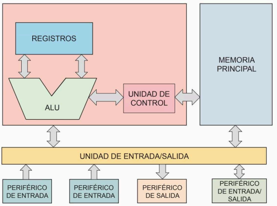
Para la interconexión de estos elementos, se utilizan una serie de conexiones llamadas buses que son representadas por flechas.
Códigos
Código Fuente
Son muchas instrucciones agrupadas escritas por un programador en algún lenguaje de programación, y hay muchos, como pueden serlo mas conocidos/ importantes, Python, Java o C++.
Podemos decir el código fuente es:
- Editable y legible para desarrolladores ( dar ejemplo de que es nuestra manera de tener una relacion mas cercana con el sistema informático)
- Utilizado para definir la lógica y funcionalidades del programa.
- Entrada para los procesos de compilación o interpretación.
Esto esencial porque es la el intermediario entre el lenguaje de programacion y nuestro lenguaje.
Código Objeto
Es la representacion generada al compilar el código fuente. Compuesto por instruccion pero en lenguaje de máquina, (aún no esta listo para ejecutarse).
Se representa en binario (0110 1101).
Lo principal del código fuente es:
- Que es específico para entender el hardware y sistema operativo que es donde se ejcutará.
- Dificil de leer por los humanos.
- Puede incluir referencia a librerias externas, esto lo vereos en el siguiente código.
Para que el programa sea ejecutable, primero deberemos tener estos pasos, ensamblado, enlazado y carga.
Código Ejecutable
Este es el producto final para ser ejecutado por el sistema operativo. Es el resultado de los dos códigos anteriores con todas las librerías para que funcione. Lo usará el usuario final para interactuar con el programa.
Tipos de traductores
-
Compiladores. Estos traductores hacen su tarea de forma global. Es un único proceso se analiza todo el código fuente, se genera el código objeto y se almacena el resultado. Si el programa fuente esta correctamente escrito esto se podrá llevar acabo, en caso de no estarlo no se generará el código. El código objeto generando como resultado de la compilación, dependiendo del tipo de compilador, se podrá ejecutar directamente o puede que se necesiten otros pasos antes de que el programa sea ejecutable, como los pasos de ensamblado, enlazado y carga. Una vez obtenido el código ejecutable, se podrá ejecutar tantas veces como se desee, sin necesidad de volverlo a compilar.
-
Intérpretes. A diferencia de lo que pasa con los compiladores, estos hacen a la vez el proceso detraducción y el de ejecución. Su forma de trabajo es que, primero analizan los bloques del programa fuente, generan el código objeto y lo ejecutan, luego se repite este proceso hasta que acaba el programa. En la etapa de ejecución, se pasa el control al código objeto generado y se espera a que acabe su ejecución. Así, cada fragmento de código fuente solo se almacena provisionalmente.
En caso de ser lenguaje de Java, se combinan la comilación y la interpretación. El programa se compila, se genera un formato intermedio llamado bytecode y el resultado es interpretado por la máquina virutal de Java.
Hay una serie de harramientas para realizar el proceso desde la generación del código fuente hasta la ejecución del programa
-
Para escribir código fuente se puede emplear un editor de textos simple o alguna herramienta de programación. Hay programas como Notepad++ o Sublime que nos permiten crear código fuente en diferentes lenguajes de programación facilitando así el trabajo de los programadores.
-
Dependiendo de si usamos un lenguaje de programación u otro, emplearemos un compilador o un interpréte.
-
También puede ser que el código generado no sea ejcutable, entonces será necesario emplear un entorno de desarrollo integrado, una aplicación informática compuesta por un cojunto de herramientes que facilitan a la persona encargada de la programación su tarea y dan rapidez en la creación de programas. La mayoría de estos entornos, tienen un depurador, ( que nos ayudarán en las detenciones y correcciones de errores de programación), una herramienta de control de verisiones y un constructor de interfaz gráfica.

Lenguajes de programación
Los lenguajes de programación tienen todos algo en común y es que, son instrucciones de los programas que ha de ejecutar el ordenador para resolver algún tipo de problema.
Los elementos básicos que se recogen en todos los lenguajes de programación son estos:
- Identificadores nombre simbólicos, que damos a algunos elementos de programación, como son variables, tipos, módulos, etc
- Constantes son datos que no cambian su valor en el programa, a no ser, que nosotros queramos modificarlo pero sirve justamente para no ir cambiando todo a mano.
- Operadores símbolos que muestran operaciones entre variables, constantes, etc. (suma (+), resta (-)...).
- Instrucciones símbolos especiales que representan estructuras de procesamiento y de definición de elementos de programación y lo hace de manera consecutiva.
- Comentarios se utiliza normalmente para ayudarte a guiarte en el programa, (porque seamos sinceros, si pasan 2 dias ¿sabes que hace no?, pero ¿y si lo dejas 1 mes y lo tienes que reusar o cualquier otra cosa, te acordarías? No, por lo tanto se utiliza para saber que se va realizando en el programa).
Siendo el primer lenguaje de programación, es el único lenguaje de programación que
entiende directamente la máquina. Utiliza el alfabeto binario ( números 0 y 1), para
establecer la comunicación con el hardware de la máquina.
Dejó de usarse por ser complejo y fue sustituido por otros más cercanos al lenguaje
natural.
Se sustituyen los anteriores lenguajes que utilizaban códigos numéricos o direcciones de
memoria,
por unos más textuales, que son equivalentes a las instrucciones de la máquina, o sea,
de
forma simbólica
En definición este lenguaje actúa como puente entre el código fuente escrito por los
programadores y el código de la máquina, de ahí su nombre de lenguaje intermedio. Tiene
varios inconvenientes;
tiene un repertorio muy reducido de instrucciones, tiene formato muy rígido y depende
mucho
del hardware.
Este lenguaje libera al programador de tareas más costosas. Esto se consigue así por el nivel de abstracción que ofrecen estos lenguajes, muy necesario para programadores.
- Instrucciones expresan entre caracteres alfanuméricos, numericos y especiales.
- Se pueden definir variables para recoger los datos que se vayan a tratar.
- Pueden incluirse lineas con comentarios
- Disponen de instrucciones mu potentes de tipo aritmetico, logicas de tratamiento de caracteres, etc.
- Tiempo de codificacion y puesto a punto de los programas es menor
- Resultan mas faciles de corregir y modificar.(ahora tiempo)
- La curva de aprendizaje de las personas es más corta y menos pronunciadad que con los otros lenguajes.
Pero también hay inconvenientes:
- No se traducen directamente por lo que precisan de un pequeño tiempo de proceso de traducción
- La memoria aumenta, por el traductor, el programa traducido, etc. Aunque, tampoco es problema, ya que con el hardware que hay hoy eso no supone un gran problema.

LENGUAJES DE PROGRAMACIÓN ESTRUCTURADOS
Son caracterizados por el empleo exclusivo de 3 estructuras para la creación de cualquier programa.
Estructura secuencial, alternativa y repetitiva.
Las aplicaciones tambien usan diversos componentes de software, llamados módulos.
Los módulos hacen determinadas tareas de procesamiento, para lo que requiere utilizar datos.
En los módulos se van pasando los datos llamados parámetros y a veces nos devuelven resultados
Hay 2 tipos de modelos que son:
- procedimientos
- funciones
Su diferencia es que las funciones devuelven algún datos mientras que las otras no lo hacen.
Luego podemos hablar sobre el Diagrama de Estructuras. Cada rectángulo es un módulo y las
flechas que los unen son las llamadas.

El lenguaje orientado a objetos surgió más tarde, supusieron un cambio de visión en relacion a desarrollo softaware. Segun el paradigma orientado a objetos, una aplicacion informatica consta de diversos objetos que interactuan entre si.

Maquina Virtual y su utilidad
Una máquina virtual es una aplicación que ejecuta los programas como si fuese una máquina real, aunque no lo sea. Existen dos tipos de máquinas virtuales:
- Maquinas virtuales de sistema:son aplicaciones que emulan a un ordenador por completo, de forma que se puede instalar en su interior otro sistema operativo con su propio disco duro, memoria, tarjeta gráfica, etc. Se puede trabajar en la máquina virtual de igual forma que si se tratase de una máquina real. Son ejemplos de aplicaciones de este tipo VMware Workstation y Virtual Box. Se pueden utilizar estas máquinas virtuales para disponer de manera sencilla de varios sistemas operativos en el mismo ordenador (instalando uno de ellos en la máquina real y otro diferente en la virtual).
- Maquinas virtuales de proceso:estas máquinas ejecutan un proceso concreto dentro de un sistema operativo. Este tipo de máquinas se inician cuando se lanza el proceso que se desea ejecutar y se detienen cuando este termina. El objetivo de estas máquinas es permitir que un programa se ejecute de igual forma en cualquier plataforma, proporcionando un entorno de ejecución independiente del hardware y del sistema operativo y ocultando los detalles de la plataforma subyacente. El ejemplo más popular de máquina virtual de proceso es la máquina virtual de Java.
Maquina virtual de Java
- Máquina virtual de Java:es el ejemplo típico de máquina virtual de proceso. Su ventaja es que dota de portabilidad al lenguaje, de manera que un programa compilado en Java se puede ejecutar en cualquier plataforma. Esto se debe a que el programa escrito en Java realmente no es ejecutado por el procesador del ordenador, sino por la JVM.
El proceso que se lleva a cabo para poder ejecutar un programa escrito en Java
- La persona encargada de la programación escribe el código fuente del programa en lenguaje Java mediante el empleo de un editor de textos, para lo que puede usar el que viene incorporado en el entorno de desarrollo integrado. De esta manera, se genera un archivo de texto con extensión .java.
- Se compila el programa fuente mediante el compilador javac, que también viene incorporado en el entorno de desarrollo, lo que da lugar a un fichero con extensión .class, en caso de que no haya errores en el código fuente. Este fichero contiene código en un lenguaje intermedio llamado bytecode, que es independiente del ordenador y del sistema operativo en el que se ejecuta.
- La máquina virtual de Java traduce el archivo con extensión .class al código binario para que el programa pueda ser ejecutado. Como la JVM está disponible en diferentes sistemas operativos, los archivos con extensión .class se pueden ejecutar en distintas plataformas, como Windows, Linux, macOS, etcétera. 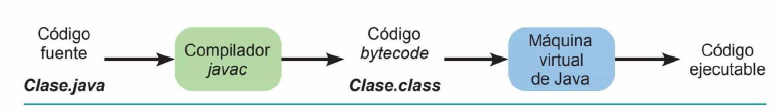
Razón de ser de la ingeniería del software.
la ingeniería del software, que es una disciplina para el desarrollo de software que surgió a partir de la ingeniería de sistemas y de hardware. La definición que propuso Fitz Bauer para la ingeniería del software es: «el establecimiento y uso de principios de ingeniería para llegar a un obtener un software rentable, que sea fiable y que funcione eficientemente en máquinas reales».
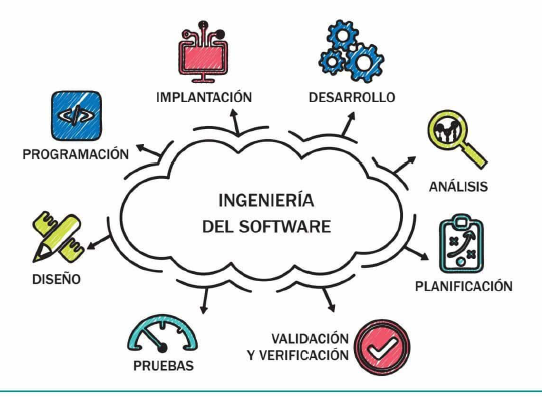Fases del desarrollo de una aplicación informática.
- Análisis: el objetivo de esta tarea es analizar las necesidades de los usuarios potenciales del software para determinar qué debe hacer la aplicación y, de acuerdo con ello, escribir una especificación precisa de dicho sistema. Durante esta fase se pretende responder a las siguientes preguntas: qué información ha de ser procesada, qué función y rendimiento se desean, qué interfaces deben establecerse, qué restricciones de diseño existen y qué criterios de validación se necesitan para definir un sistema correcto. Para ello, como es obvio, es necesario realizar una actividad inicial de comunicación con el cliente que ha encargado el desarrollo de la aplicación, y una vez obtenida la información necesaria, se podrá modelar el sistema. Como resultado, se obtendrá una especificación del sistema, que consistirá en
- Diseño: Durante esta fase, se traducen los requisitos resultado de la fase de análisis en componentes de software (tablas de una base de datos, programas con procedimientos o funciones, clases con atributos y métodos, interfaz de usuario, etc.). Se trata de un refinamiento de la fase anterior. Por ejemplo, en esta fase, una de las decisiones que habrá que tomar es decidir qué sistema gestor de base de datos (SGBD) se va a emplear para gestionar la información que debe ser usada o generada por la aplicación: Oracle, MySQL, SQL Server, etcétera.
- Programación: consiste en traducir los resultados de la fase de diseño en una forma legible para la máquina, es decir, se escribe el código fuente de cada componente del software empleando un determinado lenguaje de programación. El resultado de esta etapa es el código ejecutable.
- Pruebas: con estas se comprueba si la aplicación funciona correctamente. Hay diferentes tipos de pruebas. Así, se comienza probando cada componente de software por separado (pruebas unitarias) y, posteriormente, se van integrando poco a poco los componentes (pruebas de integración), hasta probar el programa completo (pruebas de validación), cuyo objetivo es comprobar que la aplicación satisface los requisitos del cliente. Como resultado de estas pruebas, se descubrirán errores, en atención a los cuales, será necesario modificar el código, o incluso rehacer las tareas previas de diseño y/o análisis.
- Explotación: en esta etapa, se lleva a cabo la instalación y puesta en marcha del software en el entorno de trabajo del cliente.
- Mantenimiento: el software sufrirá cambios después de que se entregue al cliente por diversos motivos. La tarea de mantenimiento consiste en realizar cambios sobre el software, para lo que se aplicará al programa existente, cada una de las actividades precedentes del ciclo de vida en vez de a uno nuevo. 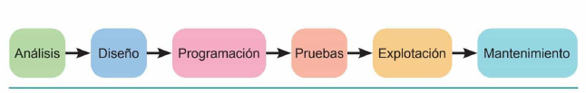
Es necesario llevar a cabo otra tarea, que debe comenzar tras la comunicación inicial con el cliente y que es una actividad más de gestión que técnica. Se trata de la tarea de planificación, que consiste en elaborar un plan del proyecto de software que indique las tareas técnicas que se han de realizar, los riesgos probables, los recursos que se necesitan, los productos de trabajo que se obtendrán y una programación de las actividades. Es preciso realizar otras tareas adicionales, de menor carácter técnico y también relacionadas con la gestión, y que Pressman (2010) llamó actividades sombrilla:
- Seguimiento y control del proyecto de software: se debe evaluar periódicamente el proyecto comparándolo con el plan preestablecido con el fin de tomar acciones si se produce algún desvío respecto al plan.
- Administración del riesgo: consiste en evaluar los riesgos (problemas) que pueden afectar al resultado del proyecto o a la calidad del producto.
- Aseguramiento de la calidad del software: se definen y ejecutan las actividades necesarias para garantizar la calidad del software.
- Revisiones técnicas: se evalúan los productos obtenidos con el fin de descubrir y eliminar errores antes de que se propaguen a la siguiente actividad.
- Medición: consiste en definir y reunir las mediciones del proceso, proyecto y producto para ayudar al equipo a entregar el software que satisfaga las necesidades del cliente.
- Administración de la configuración del software: se administran los efectos del cambio a lo largo del proceso de desarrollo de software.
- Administración de la reutilización: se establecen los criterios para poder usar productos del trabajo en proyectos posteriores y los mecanismos para que esto se pueda llevar a la práctica, es decir, para obtener componentes reutilizables.
- Preparación y producción del producto del trabajo: se agrupan las actividades necesarias para crear productos del trabajo, como modelos, documentos, registros, formatos, etcétera.
A continuacion hablaremos mas detalladamente sobre las actividades estructurales de la ingenieria del softaware.
Analisis
El objetivo de esta actividad estructural de análisis es lograr una comprensión clara del problema que se necesita resolver o, dicho de otro modo, de los requisitos funcionales que debe cumplir la aplicación que el cliente ha encargado. Esta tarea no es sencilla por diversos motivos:
- El cliente puede no tener claro qué requisitos debe satisfacer la aplicación.
- El cliente tiene claros los requisitos, pero no es capaz de expresarlos de manera comprensible para el equipo de desarrollo.
- Puede haber malentendidos entre el equipo de desarrollo y el cliente por la razón indicada en el punto anterior, por desconocimiento del problema que hay que resolver por parte del equipo de desarrollo, o por desconocimiento de lo que la tecnología puede ofrecer por parte del cliente.
Además de los requisitos funcionales, que hacen referencia a lo que tiene que hacer la aplicación, hay otro tipo de requisitos llamados no funcionales, como los siguientes:
- Fiabilidad: grado en que una aplicación funciona sin fallos.
- Escalabilidad: capacidad del sistema para manejar aumentos de carga sin disminuir el rendimiento.
- Extensibilidad: capacidad del software para añadir nuevas funcionalidades y componentes.
- Seguridad: grado con que una aplicación protege la información contra el acceso indebido a ella.
- Mantenibilidad: grado en que el software es comprendido, reparado o mejorado.
Antes de elaborar los modelos que son el resultado de la fase de análisis, es necesaria una tarea de comunicación con el cliente, para la que se pueden emplear distintas técnicas, como:
- Entrevistas: es la técnica más tradicional. Es similar a una entrevista periodística en la que el analista entrevista, uno a uno, a los futuros usuarios del software.
- Desarrollo conjunto de aplicaciones se crea un equipo de analistas y usuarios que se reúnen para trabajar conjuntamente en la determinación de las necesidades de los usuarios.
- Desarrollo de un prototipo: consiste en construir un modelo o maqueta del sistema que permite ver a los usuarios las características del sistema que desean obtener. El prototipo se puede o bien usar solo para este fin y se desecha, o bien se puede mejorar para convertirlo en el producto final.
Como resultado de esta fase, se debe obtener un documento llamado especificación de requisitos del software (ERS), que sirve de base para la siguiente etapa de diseño. En esta etapa, se crearán tanto diagramas de clases como diagramas de casos de uso.
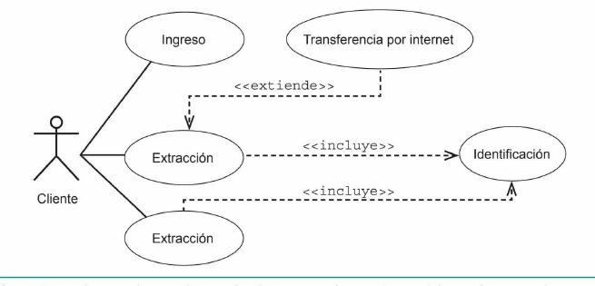DISEÑO
En la etapa de diseño, se determina cómo se ha de solucionar dicho problema. Para ello, se partirá de los diagramas obtenidos en la etapa de análisis, refinando algunos de ellos y creando otros que indiquen los pasos que hay que dar para responder a los requisitos establecidos.
PROGRAMACIÓN
Se parte del diseño detallado y, en esta fase, se escribe el código fuente correspondiente siguiendo las normas del lenguaje de programación de alto nivel seleccionado. Es habitual que se establezcan determinadas normas a la hora de escribir el código fuente con el fin de que los programas tengan un aspecto homogéneo y sean fáciles de entender y, por tanto, de modificar, sobre todo si se tiene en cuenta la relevancia de las posteriores tareas de mantenimiento. Normalmente, se establecen normas en relación con los siguientes elementos:
- Comentarios: se suelen escribir al comienzo de determinadas partes del código para describir su razón de ser (al comienzo de una clase, al indicar cada atributo de una clase, al comienzo de cada método, etc.) y para aclarar determinadas porciones de código por su alto nivel de complejidad.
- Declaraciones de variables y de parámetros de métodos.
- Nombres de clases, atributos, métodos, variables, constantes, etc.
- Líneas en blanco entre clases, métodos, etc.
- Sangrados para facilitar la legibilidad del código.
PRUEBAS
El objetivo de esta actividad es detectar errores en el software antes de que este sea entregado al cliente. La estrategia que se aplica en dichas pruebas consiste en realizarlas desde los elementos más pequeños hasta los más grandes, es decir, se comienza probando pequeños componentes de software hasta llegar al programa completo. El objetivo de las pruebas es doble: verificar y validar el software.
- Por medio de la verificación, se determina si el software se ha construido correctamente, es decir, si las tareas que realiza las lleva a cabo de manera adecuada.
- La validación consiste en comprobar si el software es realmente el que el usuario desea, o sea, si el sistema hace lo que quiere el usuario.
Existen dos tipos de técnicas de pruebas:
- pruebas de caja blanca o pruebas estructurales: se examinan los detalles de cada
módulo, para lo que se debe disponer del código fuente. Así, se prueban los diferentes
caminos a través de este código, así como los bucles, las variables, etcétera.
- pruebas de caja negra o pruebas funcionales: el software se considera como
una caja negra que recibe una serie de entradas y proporciona una serie de salidas.
El objetivo es validar los requisitos funcionales.
EXPLOTACIÓN
Una vez que se ha probado el software, se han corregido los errores detectados y se ha documentado todo el proceso, se lleva a cabo la instalación y la puesta a punto y en funcionamiento de la aplicación en las instalaciones del cliente. Durante esta fase, es necesaria la presencia del cliente. Por lo tanto, las tareas de esta fase son:
- Se instalan los programas en el equipo o los equipos del cliente.
- Se llevan a cabo las comprobaciones conocidas como pruebas beta, que se realizan en las instalaciones del cliente.
- Se realiza la configuración del sistema y se comprueba que la aplicación funciona de manera adecuada.
- Una vez completados los pasos anteriores, la aplicación ya pasa a la fase de producción normal, esto es, a su uso por parte del usuario final.
MANTENIMIENTO
Hay diferentes tipos de mantenimiento en función del motivo que lo origina:
- Mantenimiento correctivo: este se debe a que el cliente detecta errores en el software a pesar de las pruebas que se realizaron, y consiste en corregir estos errores.
- Mantenimiento adaptativo: en muchos casos el software deba adaptarse a cambios del entorno externo porque, por ejemplo, se tiene un nuevo sistema operativo. Este tipo de mantenimiento se realiza frecuentemente por los rápidos avances en el ámbito de la informática.
- Mantenimiento perfectivo: es muy común que, con el paso del tiempo, el cliente solicite ampliaciones funcionales, es decir, desee que la aplicación incorpore nuevos requisitos funcionales. Asi mismo, es posible que se deseen mejoras en requisitos no funcionales, por ejemplo, que el programa se ejecute más rápidamente o que se incremente la seguridad del sistema.
Roles que intervienen en el proceso de desarrollo de software
- -Jefe de proyecto: lleva a cabo la tarea de planificación del proyecto
- -Expertos del dominio: son personas que trabajan en la empresa u organismo para
el que hay que desarrollar la aplicación y que conocen el dominio del problema,
- -Analista: su cometido es la tarea de análisis,
- -Arquitecto: a partir del trabajo realizado por el analista, debe definir las líneas
maestras del diseño, estableciendo la arquitectura del sistema,
- -Diseñador parte de un subconjunto de los requisitos definidos por el analista y de
la arquitectura del sistema para diseñar las partes del sistema que implementan
esos requisitos hasta un nivel de detalle suficiente para acometer la tarea de programación.
- -Programador:se encarga de la tarea de programación.
- -Probador:se encarga de la tarea de pruebas
- -Encargado de la implantación: es el encargado de que se realice el empaquetado
de los programas y su instalación en el entorno de trabajo del cliente.
Modelos de ciclo de vida del software
Piattini et al. (2007) proporcionan la siguiente definición para el concepto de ciclo de vida: «el ciclo de vida del software es la descripción de las distintas formas de desarrollo de un proyecto o aplicación informática, es decir, la orientación que debe seguirse para obtener, a partir de los requerimientos del cliente, sistemas que puedan ser utilizados por dicho cliente». Un ciclo de vida determina el orden en el que se deben llevar a cabo las tareas en el proceso de desarrollo de software y los criterios que se deben cumplir para realizar el paso de una tarea a la siguiente. El ciclo de vida que surgió en primer lugar es el llamado ciclo de vida clásico o modelo en cascada. Posteriormente, se desarrollaron otros modelos: de proceso incremental, de proceso evolutivo y de desarrollo ágil. En los siguientes apartados, se describe cada uno de ellos.
- MODELO EN CASCADA: El modelo en cascada, también llamado ciclo de vida clásico, es el modelo más primitivo de ciclo de vida, pero ha resultado fundamental para el progreso posterior porque en él se identifican ya prácticamente todas las clases de actividades distintas que intervienen en el desarrollo y explotación de software. En este modelo, se propone un enfoque sistemático y secuencial para el desarrollo de software, comenzando con el análisis y continuando a través del diseño, la programación y las pruebas hasta llegar al software terminado, sobre el que se pueden aplicar también operaciones de mantenimiento. Se plantea un flujo secuencial de las actividades y para pasar de una fase a la siguiente es necesario cumplir ciertos objetivos. Para detectar los errores lo antes posible y evitar que se propaguen a fases posteriores, se establece un proceso de revisión al completar cada fase, antes de pasar a la siguiente. Esta revisión se realiza fundamentalmente sobre la documentación producida en esa fase y se hace de una manera formal. Si, a pesar de todo, durante la realización de una fase, se detectan errores en el resultado de fases anteriores, será necesario rehacer parte del trabajo volviendo a un punto anterior del ciclo de vida,
- MODELO DE PROCESO INCREMENTAL: Uno de los inconvenientes más importantes del modelo en cascada es que el cliente no dispone de una versión funcional del sistema hasta muy tarde. En muchos casos puede resultar más conveniente proporcionar cierta funcionalidad parcial del software al cliente y aumentarla en entregas posteriores. De esta manera, se concibe el desarrollo de software como un proceso en el que se van produciendo diversos incrementos o entregables. Para la elaboración de cada incremento, se siguen las actividades del modelo en cascada que se indicaron anteriormente. 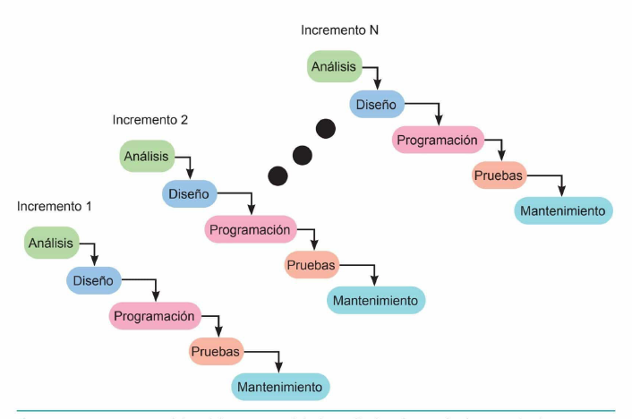
- Reduce los riesgos de retrasos, de cambios de requisitos y problemas de aceptación.
- Los entregables intermedios facilitan la retroalimentación por parte de los clientes, lo cual resulta ventajoso para evitar problemas mayores en los siguientes entregables.
- Permiten al usuario validar el sistema a medida que se construye.
- MODELO DE PROCESO EVOLUTIVO Los modelos de proceso evolutivo tienen su razón de ser en el hecho de que «el software, como todos los sistemas complejos, evoluciona en el tiempo. Es frecuente que los requerimientos del negocio y del producto cambien conforme avanza el desarrollo, lo que hace que no sea realista trazar una trayectoria rectilínea hacia el producto final [...] Se comprende bien el conjunto de requerimientos o el producto básico, pero los detalles del producto o extensiones del sistema aún están por definirse»
- Construcción de prototipos Un prototipo se puede definir como un sistema auxiliar que permite probar experimentalmente ciertas soluciones parciales a las necesidades del usuario o a los requisitos del sistema. Puede tratarse de un modelo que describa la interacción hombre-máquina, de manera que facilite al usuario la comprensión de cómo se producirá la interacción, o un programa que implemente algunos subconjuntos de la funcionalidad de la aplicación. Es conveniente seguir este modelo de ciclo de vida cuando el cliente es capaz de definir un conjunto de objetivos generales para el software, pero no puede identificar los requerimientos en detalle, o cuando las personas desarrolladoras tienen dudas considerables sobre determinados aspectos importantes del desarrollo, como la eficiencia de un algoritmo, en qué medida la aplicación se podrá usar en un determinado sistema operativo o de qué forma se ha de llevar a cabo la interacción hombre-máquina. Se puede considerar este modelo de ciclo de vida de manera aislada, pero es más común emplearlo como una técnica que puede implementarse en el contexto de cualquiera de los modelos de ciclo de vida descritos en este tema.
- Modelo en espiral Este modelo evolutivo fue diseñado para cubrir las mejores características tanto del modelo en cascada como del modelo de construcción de prototipos, añadiendo un nuevo elemento, que es el análisis de riesgo, dentro de la actividad estructural de planificación. Como modelo de desarrollo evolutivo que es, el software se desarrolla en una serie de entregas que se pueden representar como iteraciones o vueltas alrededor de una espiral. Durante las primeras iteraciones lo que se entrega puede ser un modelo o prototipo. 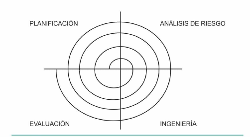
- Modelo en Cascada Todo se hace en orden, paso a paso: primero planeas, luego diseñas, después programas, pruebas y finalmente entregas.
- Modelo en Espiral Trabajas por ciclos. En cada ciclo haces un poco de planificación, pruebas y mejoras. Repites hasta tener el software listo.
- Modelo Incremental Creas partes pequeñas del software (módulos) y las vas entregando una por una. Cada vez el software es más grande y funcional.
- Modelo Iterativo Comienzas con una versión básica del software y la mejoras en varias vueltas (iteraciones), según la retroalimentación.
- Modelo de Prototipos Haces una versión rápida y básica (prototipo) del software para que los usuarios lo prueben y te digan qué cambiar.
- Modelo Ágil Trabajas en pequeños ciclos (llamados sprints, de 2-4 semanas) y entregas algo funcional al final de cada uno. Todo el equipo colabora y adapta el plan según las necesidades.
- Modelo DevOps Desarrollo y operación trabajan juntos para que el software esté siempre listo, con herramientas que automatizan todo (como actualizaciones).
- Modelo V Cada paso de desarrollo (como diseñar) tiene su paso de prueba correspondiente (como verificar que el diseño funcione).
Por ejemplo, si en la etapa de mantenimiento, se detecta que se cometió algún error en el diseño, será necesario corregir dicho error de diseño y realizar cambios en las etapas posteriores de programación y pruebas.
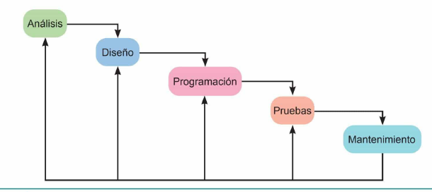VENTAJAS DE ESTE MODELO:
Estos modelos son iterativos y se caracterizan por el desarrollo de versiones cada vez más completas del software. Se presentan a continuación dos modelos de proceso evolutivo:
En este modelo, se construye el software a partir de versiones cada vez más completas, de manera que se realizan una serie de tareas varias veces. En la primera iteración, se llevan a cabo las tareas (planificación, modelado, construcción, despliegue, evaluación y comunicación) para construir una primera versión del prototipo. La realización de todas estas actividades constituye una iteración, luego se vuelven a realizar estas mismas tareas en la segunda iteración para obtener una segunda versión del prototipo más completa, y así sucesivamente.
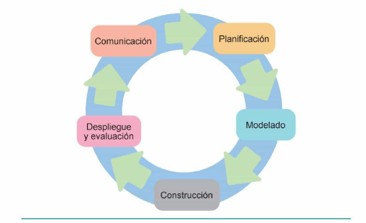La principal ventaja de este modelo es que la consideración de los riesgos o problemas que pueden afectar al desarrollo del software en diferentes momentos permite que tanto quienes encargaron el software como los que lo desarrollan sean conscientes de los problemas que pueden presentarse y sean capaces de reaccionar en caso de que estos ocurran. Además, si hay cierta inseguridad en cuanto a sus requisitos, se puede aplicar el enfoque de construcción de prototipos para eliminar ese riesgo. El principal inconveniente de este modelo es, como indica Pressman (2010), que «requiere mucha experiencia en la evaluación del riesgo y se basa en ella para llegar al éxito. No hay duda de que habrá problemas si algún riesgo importante no se descubre y administra».

Modelos de ciclo de vida del software
Metodologías de desarrollo de softaware actuales
metodología es un conjunto de filosofías, fases, procedimientos, reglas, técnicas, herramientas, documentación y aspectos de formación para los desarrolladores de sistemas de información». Una metodología puede seguir uno o varios modelos de ciclo de vida, esto es, el ciclo de vida indica qué es lo que hay obtener a lo largo del desarrollo del proyecto, pero no cómo, que es lo que indicará la metodología.
Las metodologías de desarrollo de software han ido evolucionando a lo largo del tiempo. Así, se identifican tres periodos de tiempo:
- Desarrollo convencional: durante los primeros años del desarrollo de software las prácticas de desarrollo eran totalmente artesanales y no se seguía ninguna metodología, lo que acarreaba multitud de problemas y desembocó en lo que se llamó la crisis del software.
- Metodologías estructuradas: la primera respuesta a esta crisis fue la regulación de la tarea de programación con la difusión de la programación estructurada, a la que siguió el surgimiento de métodos para el diseño y análisis estructurado, dando lugar a las metodologías estructuradas, que abarcan la totalidad del ciclo de vida del software.
- Metodologías orientadas a objetos: en la década de los 80 del siglo pasado surgieron, en primer lugar, los lenguajes orientados a objetos y más tarde, métodos para el diseño y análisis orientados a objetos.
Recientemente, se han desarrollado metodologías de desarrollo novedosas conocidas como modelos de desarrollo ágil, que intentan simplificar las metodologías existentes, buscando un equilibrio entre seguir un proceso de desarrollo que sea excesivo o «muy burocrático» y su inexistencia.
El proceso unificado de Rational (RUP)
El proceso RUP se puede describir en función de dos dimensiones:
- -Dimensión temporal: se expresa en términos de ciclos, fases, iteraciones e hitos.
- -Dimensión estática: se expresa en términos de actividades (activities), productos
intermedios (artifacts), perfiles de trabajo o roles (workers) y flujos de trabajo
(workflow).
El ciclo de vida se divide en ciclos entendiendo estos como vueltas alrededor de una espiral, y estas, a su vez, como los periodos de tiempo en los que se trabaja sobre una versión completa del sistema. Cada ciclo se compone de cuatro fases que se realizan secuencialmente:
- Fase de comienzo (inception): el objetivo de esta fase es estudiar la viabilidad del sistema. Para ello, se establece el objetivo del sistema y se delimita su alcance, definiendo, además, las estimaciones de recursos y un plan de tiempos general en el que se establecen los hitos principales, las previsiones financieras, los riesgos del proyecto y los criterios para su éxito.
- Fase de elaboración (elaboration): los objetivos de esta fase son analizar el dominio del problema, establecer una base de la arquitectura software, desarrollar el plan del proyecto y eliminar los riesgos más importantes.
- Fase de construcción (construction): durante esta fase se desarrolla el sistema de forma iterativa e incremental hasta que esté preparado para su puesta en funcionamiento. Para cada iteración, se seleccionan algunos casos de uso (requisitos), se refina su análisis y diseño y se procede a su implementación y pruebas.
- Fase de transición (transition) el propósito de esta fase es poner en funcionamiento el sistema y ponerlo a disposición de los usuarios.
Cada una de las fases de RUP puede descomponerse en iteraciones. Una iteración es un periodo de tiempo en el que se realiza un conjunto completo de actividades de desarrollo. El sistema, por lo tanto, se va desarrollando incrementalmente de iteración en iteración. Una nueva iteración produce una nueva versión que proporciona al software mayor funcionalidad y es más refinada.
El proceso RUP describe los perfiles o papeles de trabajo (quién) que realizan productos intermedios (qué) como resultado de realizar un conjunto de actividades (cómo) por medio de un flujo de trabajo predefinido (cuándo). De esta forma, el RUP establece cuatro elementos de modelado principales:
- Perfiles o papeles de trabajo (workers): mediante el papel o rol de trabajo se define el comportamiento y la responsabilidad de una persona o un grupo de personas que trabajan como una unidad y en equipo.
- Actividad (activity): es una unidad de trabajo que lleva a cabo un individuo con un rol determinado. Por ejemplo, para el papel del jefe o jefa de proyecto, una actividad podría ser planificar una iteración.
- Producto intermedio (artifact): son elementos de información producidos, modificados o usados para el desarrollo del software.
- Flujos de trabajo (workflows):son secuencias de actividades para producir productos
intermedios. RUP define nueve flujos de trabajo agrupados en dos clases principales:
- -FLUJOS DE INGENIERIA
- Modelado del negocio (business modelling): el objetivo es entender el conjunto de procesos de negocio que aparecen dentro de la empresa como un paso previo a la recogida de requisitos del sistema que se debe desarrollar.
- Requisitos (requirements): el propósito es establecer los requisitos funcionales (qué debe hacer el sistema) mediante casos de uso y los requisitos no funcionales (rendimiento, restricciones, facilidad de mantenimiento, fiabilidad, etc.).
- Análisis y diseño (analysis 8: design): en esta fase se analizan los requisitos capturados anteriormente con el objeto de tener una comprensión y descripción más precisa de los mismos, se refinan y se estructuran.
- Implementación (implementation): consiste en programar o implementar el sistema en términos de componentes, es decir, ficheros de código fuente, ejecutables, etcétera.
- Pruebas (test):incluye crear casos de prueba (especificando qué probar y cómo realizar la prueba), realizar las pruebas y evaluar sus resultados.
- Implantación (deployment):el objetivo es asegurarse de que el producto está preparado para ser suministrado al cliente, ajustar el producto de software a las necesidades del usuario y organizar su entrega y la recepción por parte del usuario.
- Gestión de la configuración: control de cambios sobre los productos intermedios.
- Gestión de proyecto: planificación del proyecto, gestión de los riesgos y monitorización del progreso del proyecto.
- Entorno: cubre la infraestructura necesaria para desarrollar un sistema. 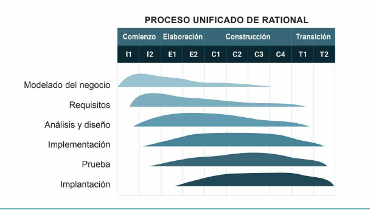
- -FLUJOS DE APOYO
Modelos de desarrollo ágil
En el desarrollo ágil, se pone el énfasis en la entrega al cliente, cada poco tiempo, de software que funcione, más que en el rigor en la ingeniería del software y en los productos intermedios. Uno de los objetivos es la entrega rápida de software incremental y para ello se prefiere formar equipos pequeños y bien motivados.
Una de las principales ventajas del desarrollo ágil es su mayor facilidad para incorporar los cambios a lo largo del desarrollo y el menor coste que estos cambios conllevan. Como sabemos, cuanto más tarde en el proceso de desarrollo se detecta la necesidad de realizar un cambio, más costoso es incorporarlo.

La Alianza Ágil ha establecido doce principios de agilidad
- La máxima prioridad es satisfacer al cliente a través de la entrega rápida y continua de software valioso.
- Los requisitos cambiantes son bienvenidos, aun en etapas avanzadas del desarrollo, pues, cuando hay cambios, los procesos ágiles son beneficiosos para la ventaja competitiva del cliente.
- Se realizan entregas frecuentes y lo más pronto que se pueda de software que funcione, preferiblemente entre dos semanas y un par de meses.
- Las personas responsables del negocio y las encargadas del desarrollo del software trabajan conjuntamente, a diario y durante todo el proyecto.
- Los proyectos son desarrollados por individuos motivados. Debe proporcionarse a estos el entorno y el apoyo adecuados, y confiar en que harán el trabajo.
- El método más eficiente y eficaz para comunicar información al equipo de desarrollo y entre sus miembros es la conversación cara a cara.
- La principal medida para progresar es un software que funcione.
- Los procesos ágiles impulsan el desarrollo sostenible. Los promotores, las personas que desarrollan el software y las usuarias de este deben ser capaces de mantener un ritmo constante de forma indefinida.
- La atención continua a la excelencia técnica y al buen diseño mejoran la agilidad.
- Es esencial la simplicidad: el arte de maximizar la cantidad de trabajo no realizado.
- Las mejores arquitecturas, requisitos y diseños surgen de los equipos con organización propia.
- El equipo reflexiona con regularidad sobre cómo ser más eficaz, para después perfeccionar y ajustar su comportamiento en consecuencia. 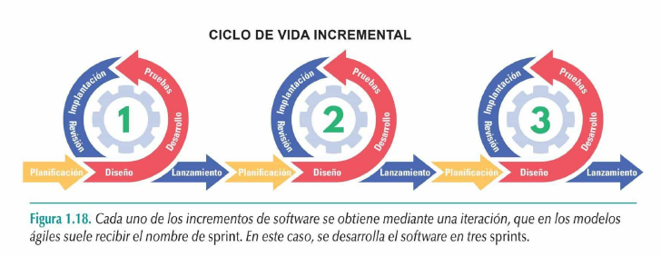
Seguidamente, se presentan dos modelos concretos de desarrollo ágil:
Propagación extrema
Los cinco valores originales de la programación extrema son la simplicidad, la comunicación, la retroalimentación, la valentía y el respeto. A continuación, se describen brevemente cada uno de ellos:
- Simplicidad: se debe simplificar el diseño para agilizar el desarrollo y facilitar el mantenimiento. Solo se diseña de forma inmediata lo necesario. Si se tuviera que mejorar el diseño, siempre se puede rediseñar o realizar una refactorización con posterioridad.
- Comunicación: debe establecerse una comunicación cercana pero informal con el cliente; debe existir una retroalimentación continua y se deben evitar los documentos voluminosos como medio de comunicación.
- Retroalimentación: al realizar incrementos de software en cortos intervalos de tiempo, los cuales son mostrados al cliente una vez terminados, se obtiene una retroalimentación continua y frecuente, lo que evita tener que rehacer partes importantes del trabajo. Las pruebas son una fuente esencial de la retroalimentación.
- Valentía: cumplir con las prácticas de la programación extrema requiere valentía. Por ejemplo, no se debe diseñar pensando en requisitos futuros, aunque llevar esto a la práctica es difícil, pues la mayoría de los equipos de desarrollo de software suelen recibir presión para que tengan en cuenta también los requerimientos futuros.
- Respeto: el cumplimiento de los cuatro principios anteriores conlleva respeto entre los miembros del equipo de desarrollo y entre estos y las demás personas que participan en el proyecto.
- Planificación:
- Diseño:
- Codificación: Codificación: antes de la codificación, se diseñan pruebas unitarias para cada una de las historias. Una vez creado el código, se aplica la prueba unitaria creada para proporcionar retroalimentación a las personas que lo han desarrollado.
- Pruebas: además de las pruebas unitarias que se hacen una vez creado el código, también se realizan continuamente pruebas de integración y validación,
Por otro lado, en la estructuración del proceso de desarrollo de software, se llevan a cabo las siguientes cuatro actividades estructurales: planificación, diseño, codificación y pruebas:
Scrum
Este modelo de desarrollo ágil tiene como objetivo la entrega de valor (productos) al cliente en cortos periodos de tiempo y se basa en tres pilares: transparencia, inspección y adaptación:
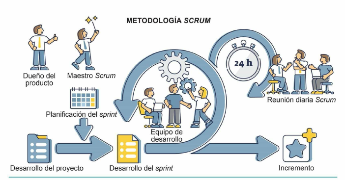